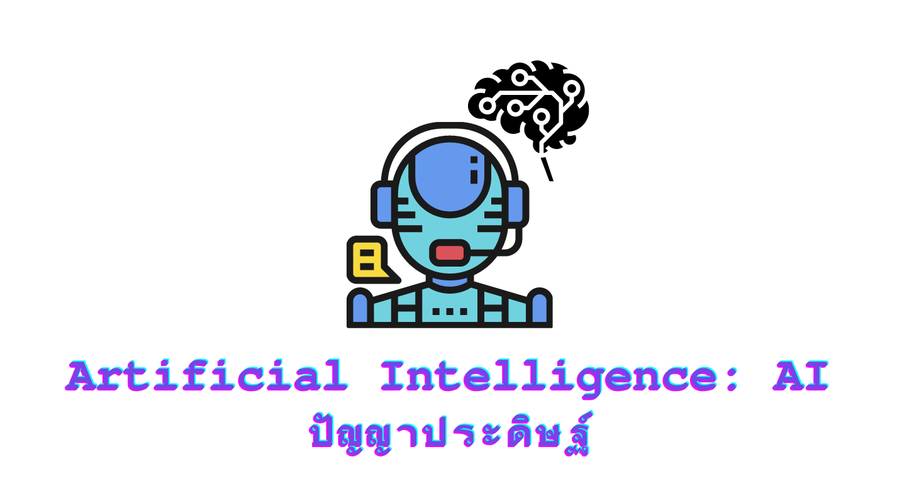
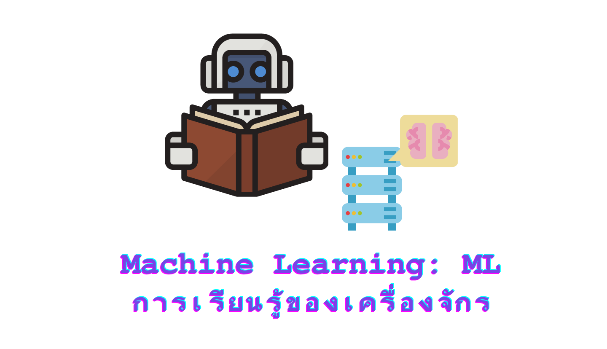
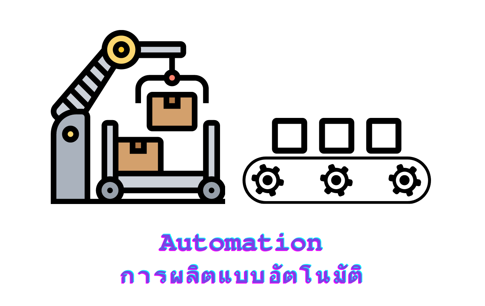
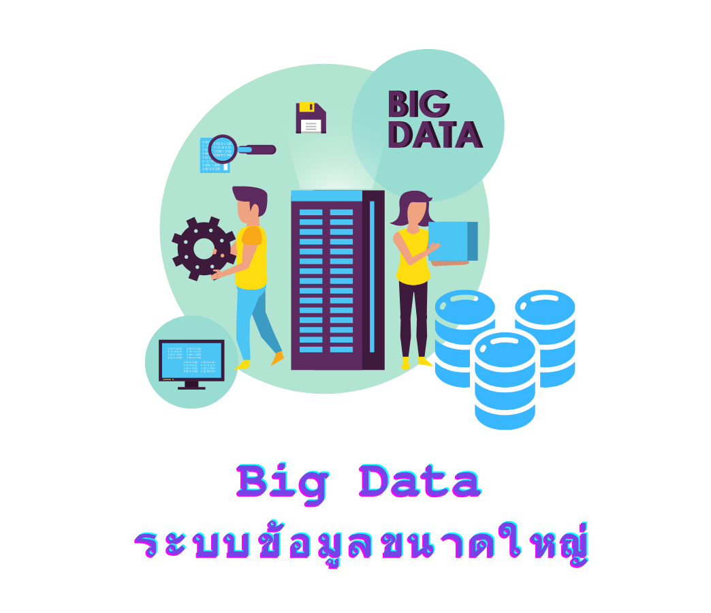
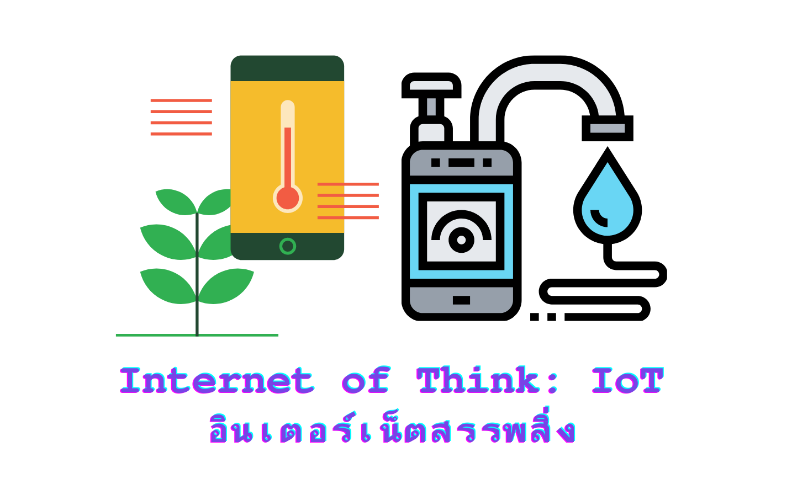
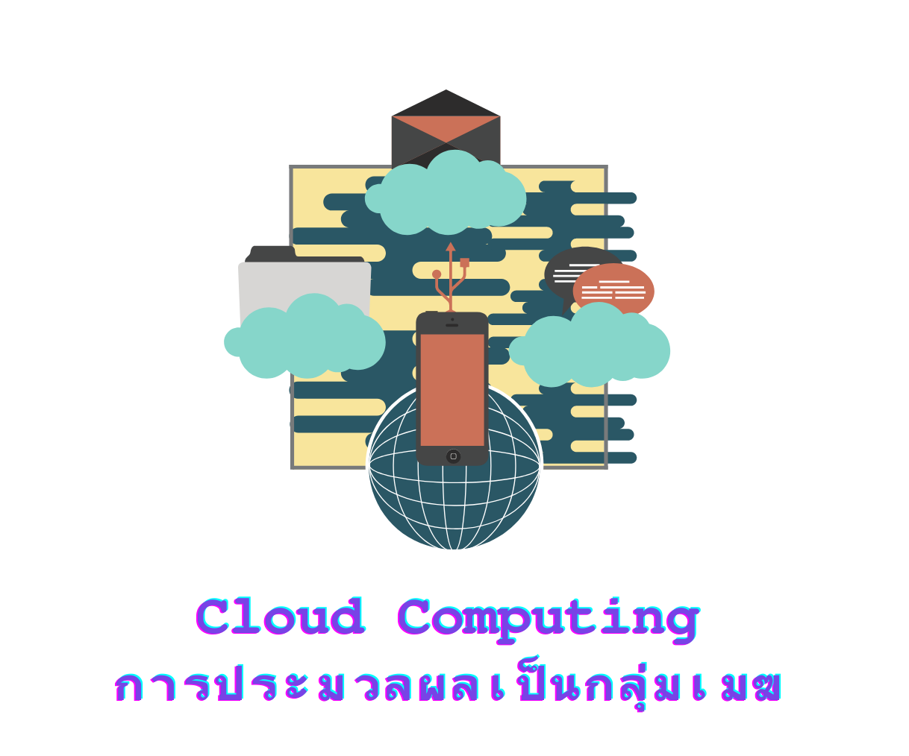

โค้ดดิ้งเปลี่ยนโลก
โลกในทุกวันนี้ก้าวหน้าไปทุกขณะ และเปลี่ยนแปลงอยู่ตลอดเวลาในทุกวัน ในช่วงไม่กี่ปีมานี้ มีการพัฒนาเทคโนโลยีอย่างก้าวกระโดด ซึ่งมีเทคโนโลยีที่สำคัญๆ ดังนี้
Artificial Intelligence: AI (ปัญญาประดิษฐ์)
เป็นศาสตร์แขนงหนึ่งของวิทยาการคอมพิวเตอร์ ทำให้คอมพิวเตอร์มีความสามารถคล้ายมนุษย์หรือเลียนแบบมนุษย์ โดยเฉพาะความสามารถในการคิดเองได้ หรือ "มีปัญญา" นั่นเอง เช่น หุ่นยนต์ดูดฝุ่น หุ่นยนต์เคลื่อนย้ายสิ่งของ โปรแกรมที่พิมพ์เอกสารให้ผ่านเสียงพูด
Machine Learning: ML (การเรียนรู้ของเครื่องจักร)
คือการทำให้ระบบคอมพิวเตอร์เรียนรู้ได้ด้วยตนเอง โดยใช้ข้อมูลมาประมวลผลเพื่อให้คอมพิวเตอร์หาคำตอบ แล้วส่งผลลัพธ์ออกมาง่ายๆ เช่น การจดจำใบหน้าของเฟซบุ้ค หรือการเสนอคลิปน่าสนใจบนยูทูปให้เราผ่านการประมวลผลจากคลิปที่เราชอบดูบ่อยๆ
Automation (การผลิตแบบอัตโนมัติ)
คือการใช้ระบบควบคุมร่วมกับเทคโนโลยีสารสนเทศเพื่อลดแรงงานคนในการผลิตสินค้าและการบริการ โดยการผลิตแบบอัตโนมัตินี้ จะทำหน้าที่หลายอย่าง เช่น ตรวจสอบคุณภาพสินค้า การใช้หุ่นยนต์แทน การขนย้ายสิ่งของ หรืองานใดๆ ก็ตามที่ทำซ้ำๆ ในปริมาณมากๆ
Big Data (ระบบข้อมูลขนาดใหญ่)
คือการรวบรวมข้อมูลขนาดใหญ่ที่มีจำนวนมาก ไม่ว่าจะเป็นข้อความยาวๆ รูปภาพ วิดีโอ เอกสารต่างๆ มาประมวลผลวิเคราะห์ข้อมูลและนำไปใช้ ในบริษัทใหญ่ๆ มักมี Big Data เพื่อเป็นตัวช่วยในการทำธุรกิจ หรือเป็นตัวช่วยในการกำหนดทิศทางขององค์กร
Internet of Things: IoT (อินเทอร์เน็ตสรรพสิ่ง)
การที่อุปกรณ์ต่างๆ เชื่อมโยงกับอินเทอร์เน็ต ทำให้มนุษย์สามารถสั่งการ ควบคุมการใช้งานอุปกรณ์ต่างๆ ผ่านทางเครือข่ายอินเทอร์เน็ต เช่น การใช้มือถือสั่งเปิด-ปิดไฟในบ้าน สั่งงานเครื่องมือการเกษตรให้รดน้ำผลผลิตตามเวลา เป็นต้น
Cloud Computing (การประมวลผลเป็นกลุ่มเมฆ)
เป็นบริการที่มีระบบหน่วยจัดเก็บข้อมูล และระบบออนไลน์ต่างๆ จากผู้ให้บริการ เพื่อลดความยุ่งยากในการทำระบบเครือข่ายเอง และสามารถเข้าถึงข้อมูลจากที่ไหนก็ได้ เพียงมีอินเทอร์เน็ต มีทั้งแบบฟรีและเก็บเงิน เช่น Google Drive, Dopbox
